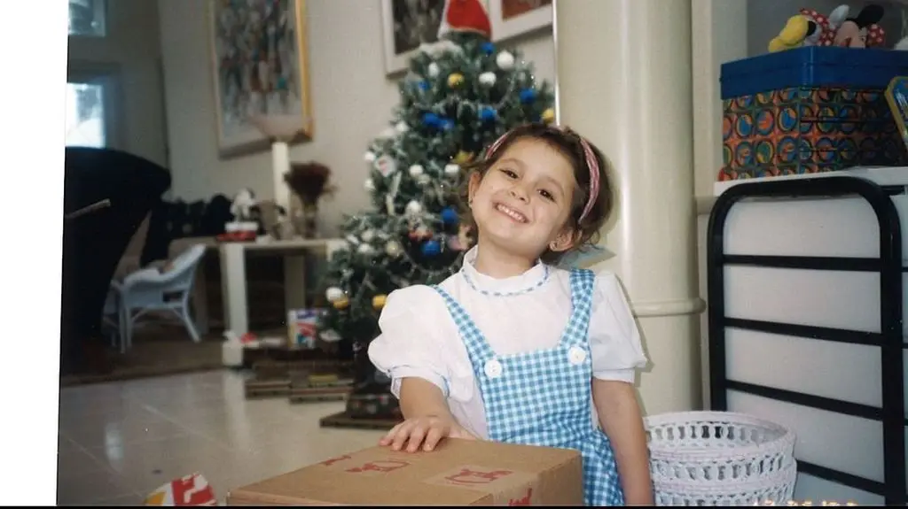
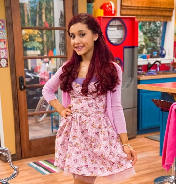

Image Source: Open Hello!

Image Source: Open Fandom
Ariana Grande was born in Boca Raton, Florida on June 26, 1993 to affluent parents Joan Grande and Edward Butera. Her first gig was singing the National Anthem publicly at a Florida Panthers hockey game. She then made her Broadway debut at age 15 after an impressive audition for the role of Charlotte in the musical "13". While performing this, she auditioned for the Nickelodeon show "Victorious" and landed the role of Cat Valentine, where she rose to fame. She further cemented this when she released her first studio album in 2013, "Yours Truly". In 2014, while acting for her second acting gig, "Sam and Cat" she released her second studio album "My Everything". From there, she rose and rose to become an A-list celebrity, with many future acting and singing gigs to come.